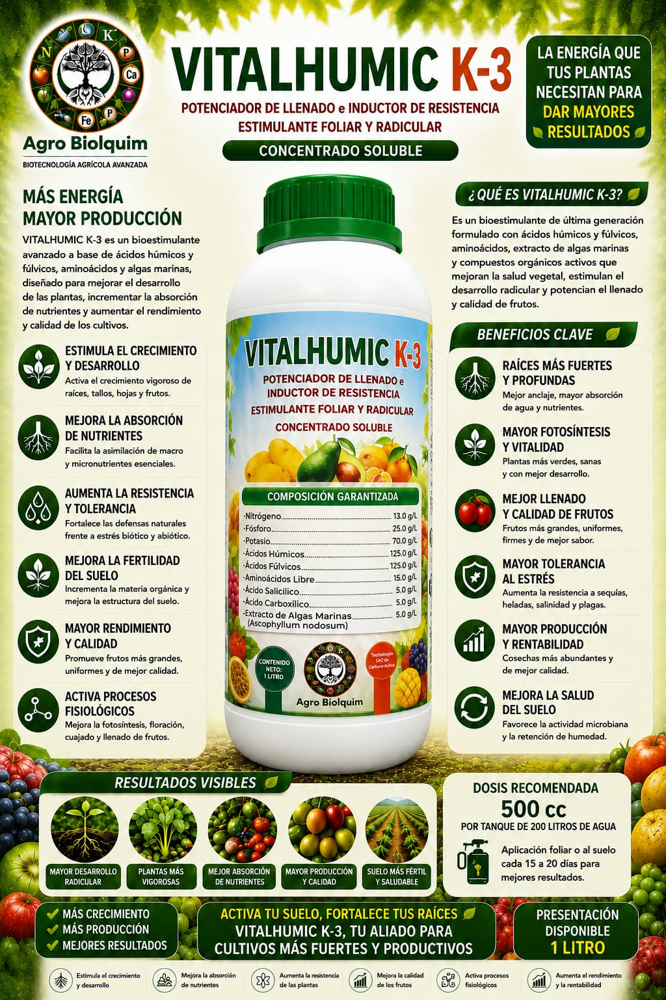
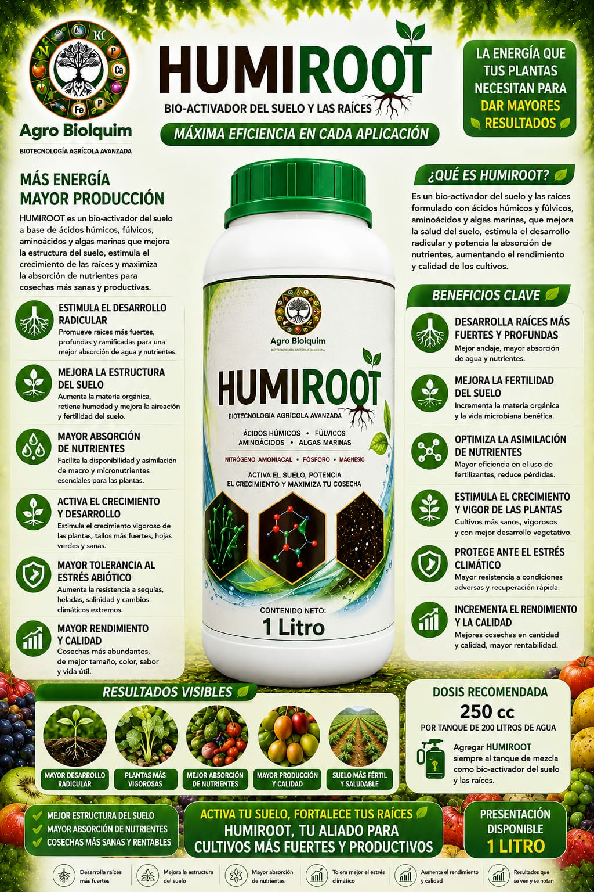
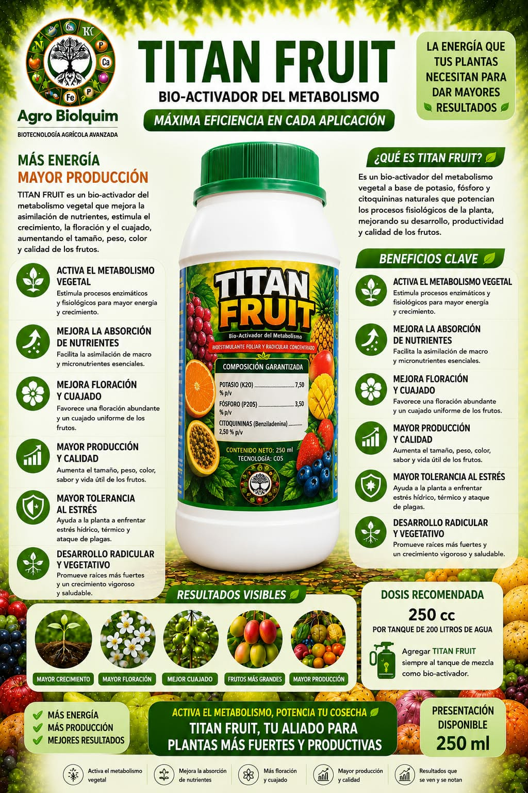
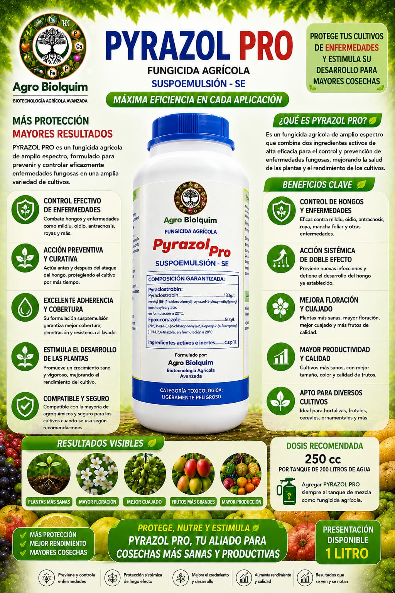
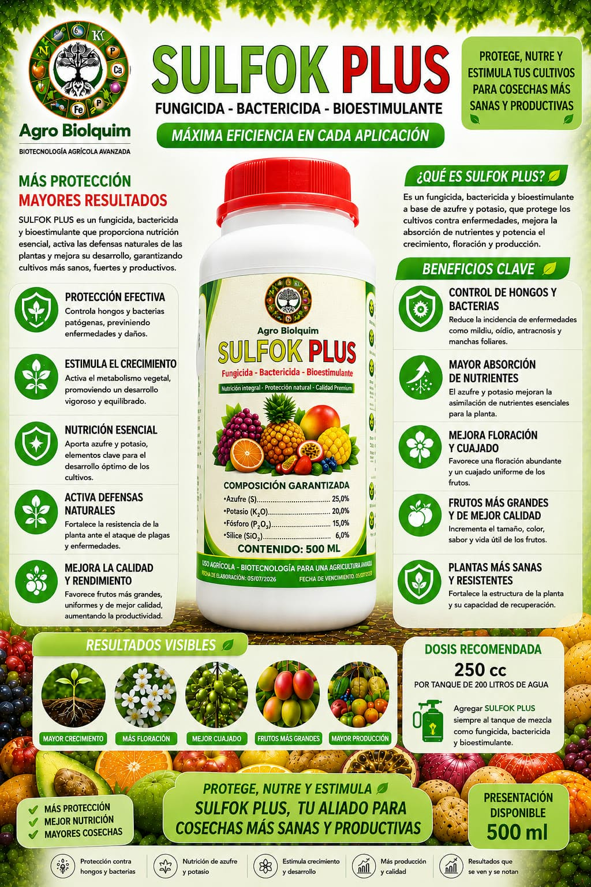
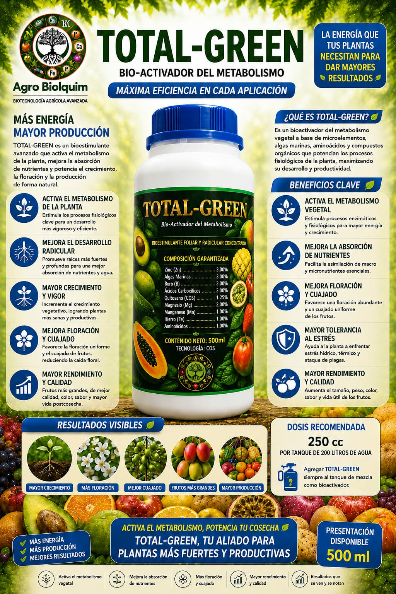
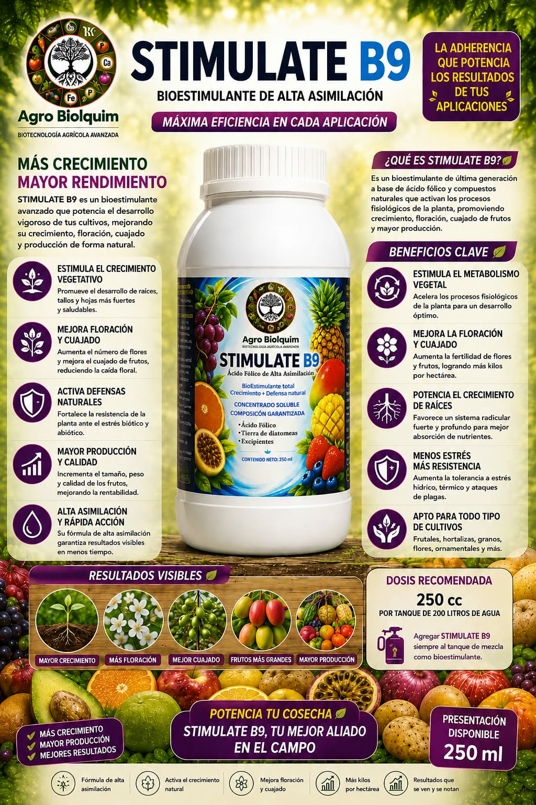
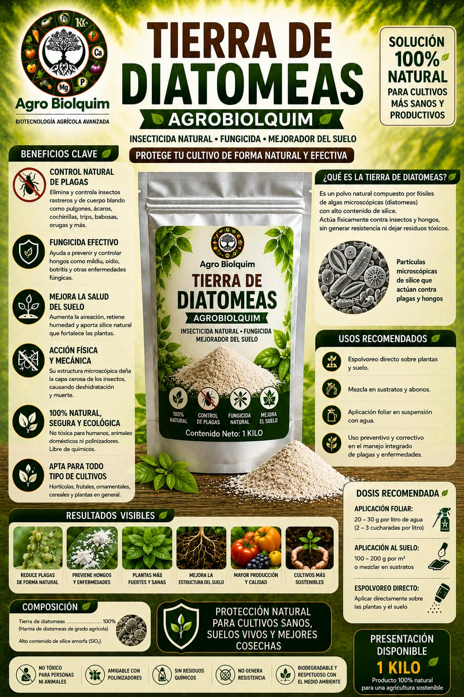
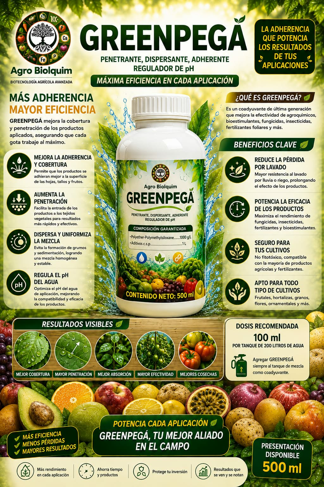

Agro Biolquim
BIOTECNOLOGÍA AGRÍCOLA AVANZADA
Formulaciones bioestimulantes, biocontroladores y nutrición avanzada diseñadas para potenciar el rendimiento, sanidad y calidad de tus cosechas en Ecuador.
Soluciones biotecnológicas probadas para potenciar la productividad agrícola

Bioestimulante de última generación a base de ácidos húmicos, fúlvicos, aminoácidos, extracto de algas marinas (Ascophyllum nodosum) y ácido salicílico.

Formulado con ácidos húmicos, fúlvicos, aminoácidos, algas marinas y nitrógeno amoniacal para regenerar la salud del suelo y promover masa radicular.

Bioestimulante concentrado formulado con citoquininas naturales (Benziladenina) y tecnología COS para acelerar la división celular, floración y cuajado.

Activa el sistema de autodefensa inmunológica de las plantas frente a hongos, bacterias y condiciones climáticas extremas. Producto 100% orgánico.

Suspoemulsión (SE) de acción preventiva y curativa con doble efecto sistémico para el control de mildiu, oídio, antracnosis y royas.

Nutrición integral y protección natural. Aporta elementos clave para activar las defensas y controlar ataques de hongos y bacterias patógenas.

Bioestimulante avanzado con Zinc (3%), Algas Marinas (3%), Boro (2%), Quitosano (1.25%), Magnesio, Hierro y Aminoácidos para máxima activación fotosintética.

Concentrado soluble de rápida absorción formulado para acelerar la división celular, estimular el metabolismo y aumentar la fertilidad de las flores.

Polvo 100% natural de fósiles de algas microscópicas con alto contenido de sílice amorfa. Actúa por contacto mecánico sin generar resistencia ni residuos.

Optimiza la mezcla de agroquímicos y fertilizantes foliares, mejorando la cobertura, penetración y resistencia al lavado por lluvias.